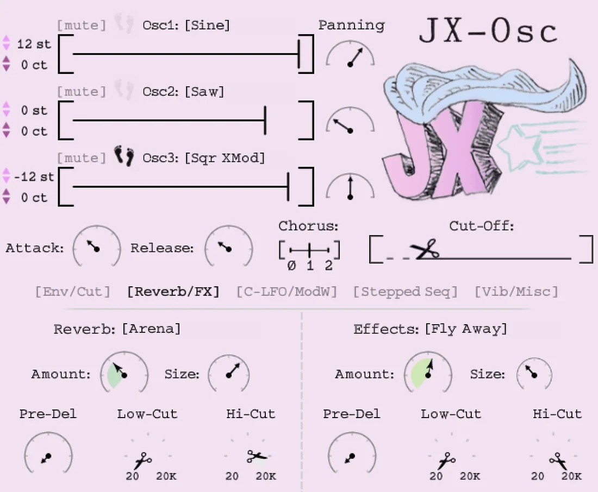
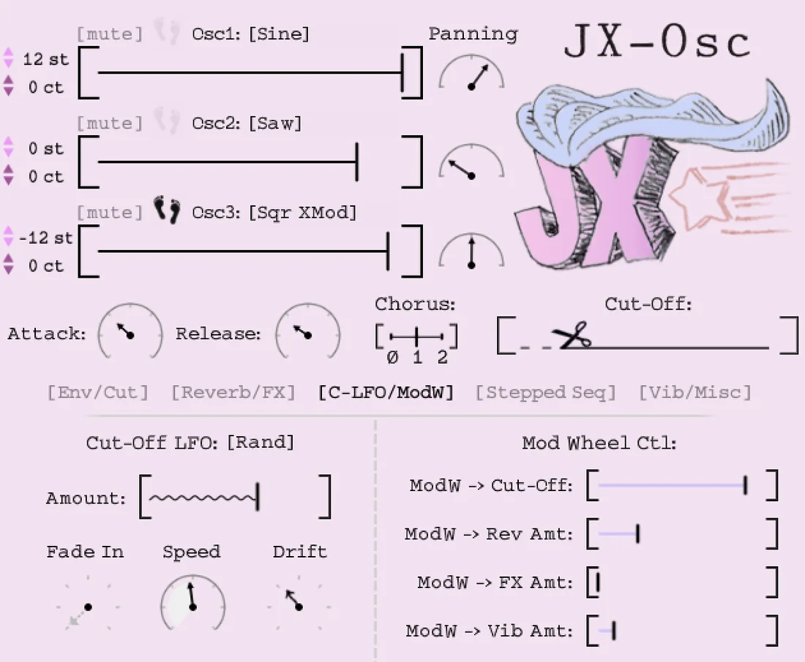
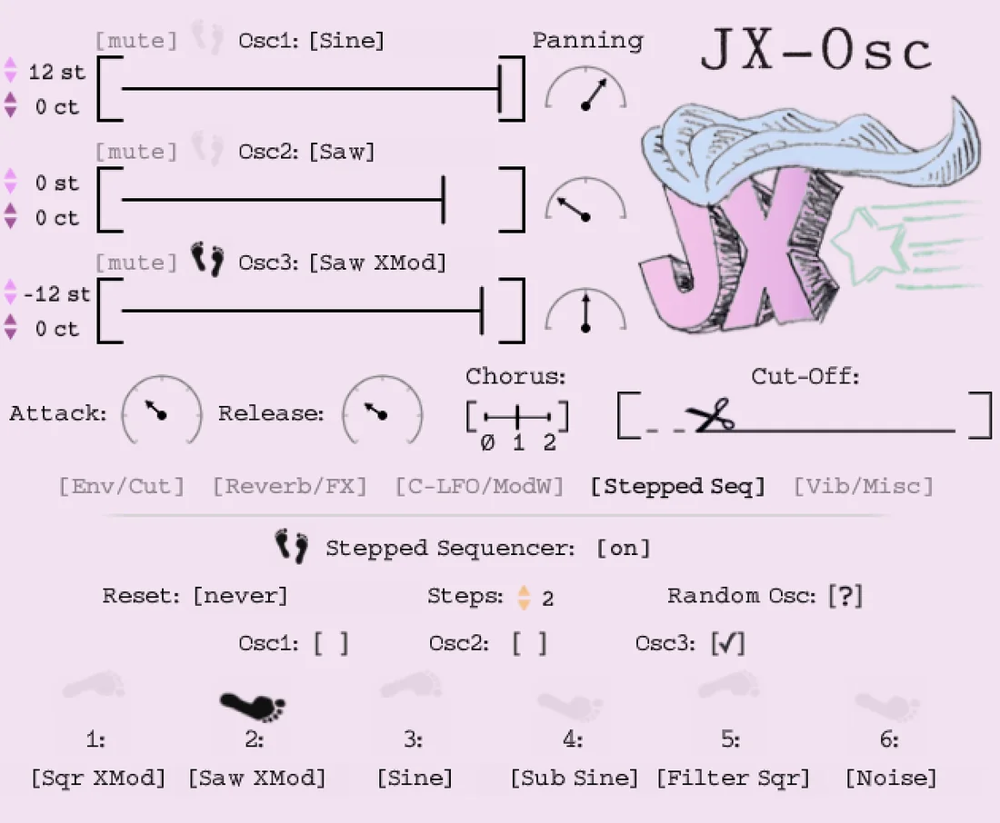
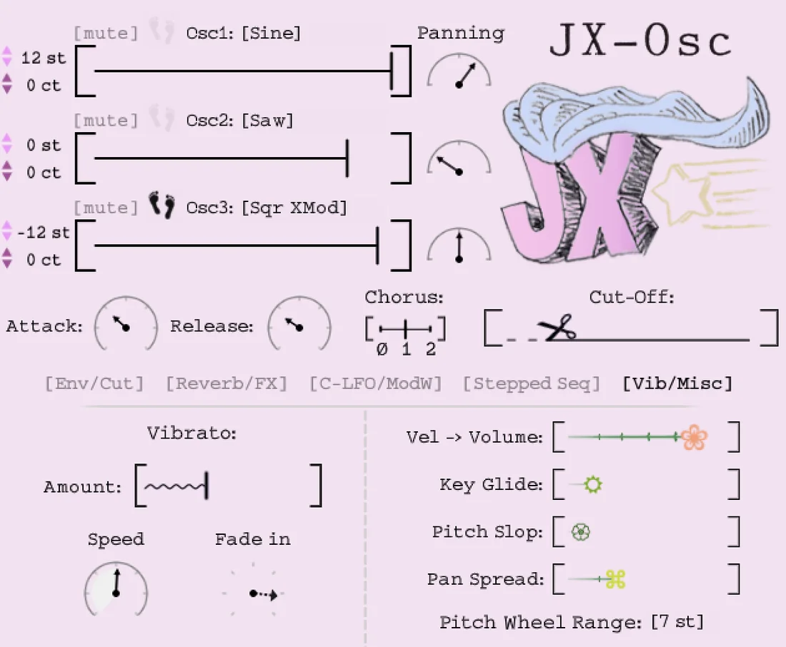

Analógico de los 80, de la Osc Collection
JX‑Osc
Un sintetizador analógico de los 80, tu compañero vintage de ciencia ficción.
Construido a partir de los osciladores en bruto de un sintetizador analógico de los 80 y envuelto en una interfaz dibujada a mano. Cuerdas, metales y pads exuberantes con ese brillo de chorus característico, en 81 presets hechos a mano sin relleno.
O llévate los cinco en la Osc Collection por $99. ¿Primera vez aquí? Prueba DEM-Osc gratis.
- Funciona en el Kontakt Player gratuito
- macOS y Windows
- 81 presets, sin relleno





Sonidos reales,
directo de JX‑Osc.
Cuatro presets y un tema completo. Cada sonido de abajo se hizo solo con JX-Osc.
Toca un sonido. Se reproduce en streaming, no hay nada que descargar.
Se ve juguetón. Y luego lo escuchas.
Cada perilla está dibujada a mano, y lo que suena debajo es un sintetizador analógico de los 80 real, muestreado forma por forma y pasado por espacios reales.
"El sonido aquí es serio... me gusta mucho."
Lo que hay bajo el capó
- 12
Formas de onda, de tres en tres
Tres selectores de oscilador, cada uno con 12 formas analógicas de un sintetizador de los 80, además de afinación y paneo por oscilador.
- 30
Espacios de convolución incluidos
Síntesis cruzada a través de nuestras reverbs de hardware y efectos eurorack favoritos: 15 reverbs y 15 FX, listos para convolucionar tu sonido.
- ↻
Un secuenciador por pasos con una vuelta de tuerca
Solo avanza cuando llega una nota y cambia la forma de onda cargada en cada nota para dar vida a melodías y acordes.
- 52
El filtro LP Pro-52 y la envolvente completa
Un pasa bajos LP Pro-52 cremoso con resonancia, velocidad y seguimiento de teclado, moldeado por un ADSR completo con curva de ataque y doble sustain.
- ≈
Ese chorus de los 80 tan característico
El chorus de ensamble exuberante que volvió icónicos a los sintetizadores de los 80, el sonido que lleva un pad directo a una banda sonora de ciencia ficción. Además, vibrato, glide, slop y spread.
Mira JX‑Osc en acción.
Un vistazo de cerca a JX-Osc: cuerdas, metales y pads exuberantes de los 80. Ver en YouTube ↗
Todo lo que incluye.
Características principales
- 81 presets hechos a mano, sin relleno
- 12 formas de onda analógicas de un sintetizador de los 80
- Ese chorus de ensamble de los 80 tan característico
- 30 respuestas de impulso propias (15 reverbs + 15 FX eurorack)
- Secuenciador por pasos activado por notas
- LFO de Cut-Off, Vibrato, Pitch Slop y Glide polifónico
- Compatibilidad total con NKS: Maschine y Komplete Kontrol
Requisitos
- Instalación y descarga con Native Access
- Funciona en el Kontakt 6+ Player gratuito, Kontakt 6 y 7 completos, Komplete Kontrol o Maschine 2
- macOS y Windows
A los productores les encanta.
- ★★★★★
"La calidad, el sonido y la pura alegría que estos sintetizadores le dan a la producción musical son de verdad un soplo de aire fresco, el tesoro escondido de la década."
- ★★★★★
"Sonidos analógicos auténticos. Los gráficos y el diseño son de primera, y los presets son un gran punto de partida para la exploración sonora. Sin duda, una obra hecha con amor."
JX-Osc está hecho por Clay and Kelsy Instruments, nuestra pequeña y adorable empresa de software. Creamos los instrumentos y las herramientas que necesitamos para seguir produciendo música. Nuestra música se ha reproducido más de 2 millones de veces, y nuestros instrumentos se han descargado más de 10,000 veces.
Consigue JX‑Osc.
O llévate los cinco, la Osc Collection por $99 (ahorra $46). ¿Primera vez aquí? DEM-Osc es gratis.
¿Necesito tener Kontakt?
No. JX-Osc funciona en el Kontakt Player gratuito. Instálalo con Native Access.
¿Qué sistemas operativos son compatibles?
macOS y Windows, con compatibilidad total con NKS para Maschine y Komplete Kontrol.
¿Qué incluye?
Tres osciladores con 12 formas de onda analógicas, chorus característico, 30 espacios de convolución, un secuenciador por pasos activado por notas y 81 presets hechos a mano: cuerdas, metales y pads exuberantes de los 80.